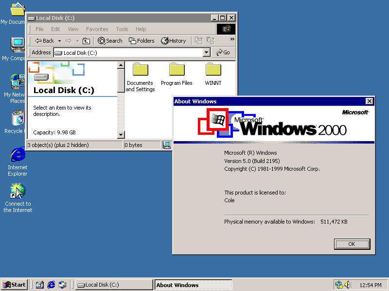
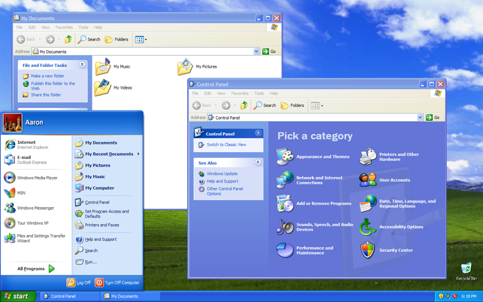
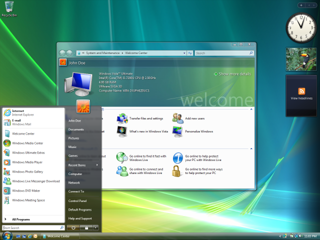
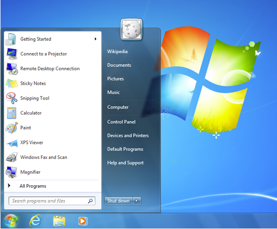
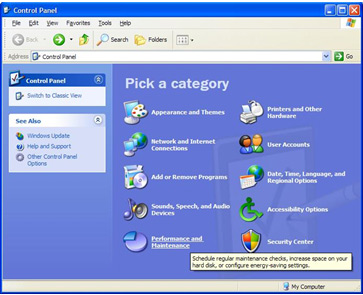
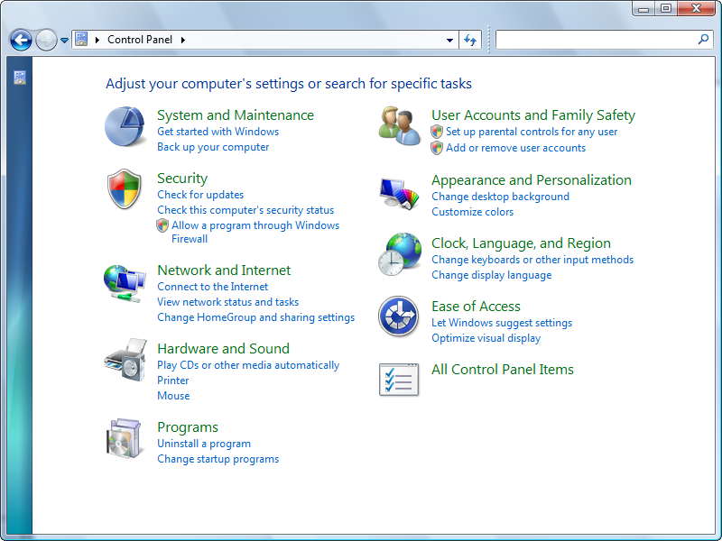

FOR STARTERS!
I'd like to say for starters that I am not a design major, or anything even close to that. I am simply a 19 year old CS major who has some rather strong opinions on something I know nothing about, so that's what this all is. I also don't have the time to write my opinions on the topic (it would take me a week to write that all out) but I think this website gives a good representation of how I feel, providing a slice of what I think on the given topic. with that being said, read at your own risk
Modern Design?
Modern design trends really rub me the wrong way. Youtube's slow decent from a well designed UI to something that genuinely pains me to use exemplifies my issues with modern design. The same goes for websites like Amazon, MSN, Gmail, and computer programs like Microsoft Office as well as productivity software from companies like Adobe. In all of these cases, they at one point had software which had relatively simple yet powerful interfaces which have declined to large messes that are difficult to navigate and understand.
My silly example of hellacious design is Microsoft Windows, an operating system which at one point mantained a rather consistent and straightforward experience now holds a hodgepodge of different eras of design, none of which flow together or work in a consistent fashion.
Well, what's wrong with Windows?
Windows exemplifies a general trend towards not favoring the core audience of computer users and instead simplifying menus and UIs to the detriment to those who use computers every day. Let's talk about that, I grew up using Windows XP until around 2015 when I switched to 7, then to 10. I can safely say that design alone, the perfect design lies between XP and 7. Here are some examples.
Windows 2000
"Classic Windows"
The classic look of Windows, seen from '95 all the way through some server versions in 2008. Its clean, easy to read, but does suffer from being both hard on the eyes due to the beige and white. This is a classic look however, which does have its charm but most people would rather gouge their eyes out then return to this.
Windows XP
The "Luna" Style
Windows XP took everything learned from the classic design and made it colorful and easy to look at. With it's vibrant color pallet it brings back so many memories. The operating sytem itself lasted for over 10 years and some design elements live on. In my personal opinion the peak of UI design, though the next two are also up there in greatness
Windows Vista
The "Aero" style
Windows Vista is known for being a massive flop due to it flat out not working at all. While they did patch the operating system into a somewhat working product, very few people actually used it besides those who were unable to afford/execute an upgrade to Windows 7 or downgrading to Windows XP. Despite this, I actually enjoy the look of the operating system itself. It modernizes the look of XP and gives it a glassier look. It is a real shame that Vista went through the development hell it did because it would have been awesome for this to be a well respected operating system.
Windows 7
"Aero" again!
Windows 7 was another solid operating system from microsoft, coming out soon after vista and fixing most of the problems it had. It took the design Vista had and removed the last pieces of XP from it's design. Instead of a thin rounded look for the taskbar it became a glass rectangular box. Many navigational elements remained intact so those coming from older versions were able to find themselves at home.
Windows 8
Awful everything (Metro)

Windows 8 is ABSOLUTELY AWFUL why did they do this??? They took the start menu and turned it into a tablet friendly interface due to an extremely flawed idea that in a few years everyone would be using touch screen interfaces to use their computer, this was in 2013 and as you can tell we still use keyboards and mice for most tasks unless you're actively using a phone or tablet. Besides this the operating system was flawed in several ways and was patched together with an update to 8.1, but the damage was done. Rumor has it was designed in Powerpoint and it's extremely boring and "out of the box" design came from them plonking boxes down using the box tool.
{kind=link}
Windows 10
Metro Redux

Windows 10 kinda fixed the issues that 8 brought up, they fixed the start menu and fixed a few issues with multitasking. The design is a bit better but suffers from one. small. issue. There are two control panels.
The Control Panel
Now why would two control panels be a problem? Why would it be desirable to have a single, unified system which retains a general look, feel, and navigation between menus. ESPECIALLY somewhere that those using it are likely more experienced with the operating system and don't care as much about modernized design.
In Windows XP
Before and during the windows XP era, the contol panel is the landing page for most computer settings. As such it is organized for ease of use so those who need to tweak settings often can quickly find what they need.
Windows 7
The necessities are met for a good control panel, clear and consise menus with colorful buttons that pull your eyes towards the contents, allowing for easy navigation as opposed to just being a list. Out of all the control panels this one is the most refined and polished of them all. It retained the familiarity that was garnered from earlier versions while cleaning up a little for clarity. Though I could be wrong, I remember moving from XP to 7 being quite easy with most features being refinements of previous versions as opposed to being new, radical systems. Had things stayed like this, I think windows would still be a well polished and enjoyable experience.
 Windows 10
Windows 10
With zero rhyme or reason Microsoft has decidied to make everyone's lives miserable by taking a semi decent operating system and making it ABSOLUTELY AWFUL. You wanna know why it's become awful through 8 years of updates? Alright, originally there was a settings menu and a control pannel. From what I remember the settings menu was reserved for really simple things like changing your wallpaper and other tasks that grandma might have to do. I honestly understand wanting to put simple and normie level operating system settings somewhere that non tech savvy people can mess with them. That's alright. Here's what it looked like in 2015
Settings
Control Panel
During the beginning a lot of settings were redundantly posted in both settings and control panel, appealing to both those who are tech savvy and those who aren't, this makes sense. WHAT DOESN'T MAKE SENSE is the slow process they've gone through of taking features that were perfectly reasonable on control panel and putting them on the settings menu. They then take these settings off the control panel which leaves you clicking between new and old menus trying to change settings. For this demonstration I will use my own computer screenshots, which is why the menu text is green and not blue
This menu allows you to change the master volume of your speakers, to select the device that it's using, and a few other vague settings. Want to do anything else? Perhaps you want to disable a device? Well you can press the manage sound devices button which ONLY ALLOWS YOU to test or disable the device.
but if you want to mess with audio drivers, change the frequency of the audio, or configure other options you have to open the audio control panel. The same audio control panel that has existed for 25 years. The same audio control panel which offers arguably easier navigation to settings. It shows tabs for different, like settings and allows for very easy and direct navigation between settings that let you see where you are. It doesn't take up the entire screen and is designed with ease of access in mind.
Now it's interesting, this menu does basically everything the old one does, but without the convoluted menus. This does everything and more compared to the settings menu, is more familier compared to older windows versions, and doesn't suffer from burying settings. It is nearly identical to that of windows xp and before
In fact, I'd argue windows xp's control panel was even more complete than even early win10's. Why on earth would they take all this time making a worse product?
The movement towards ARM/Mobile
Look back on Windows 8? what occured during that period of time?
I will finish this later :3 -me 5/29/23